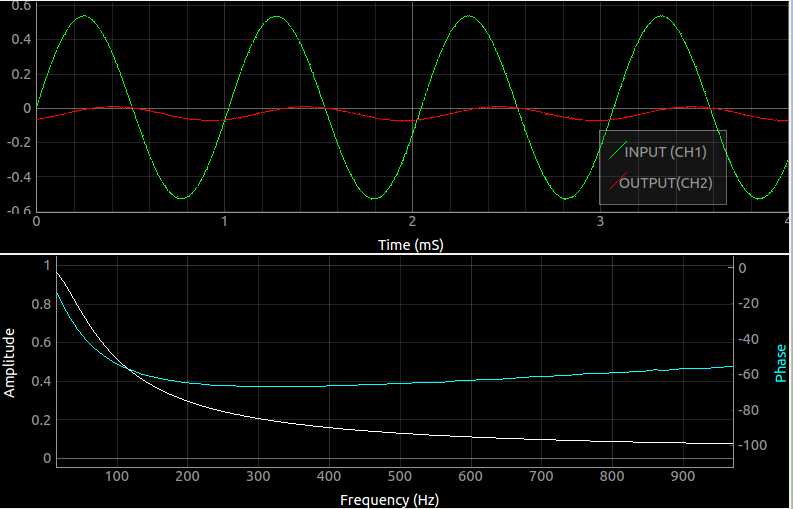

Voltage controlled Low-Pass Filter

Make the Connections as shown in the figure.
CH1 monitors the original waveform output from W1.
CH2 monitors the filtered waveform .
PV3 is used as the voltage source that controls the roll-off frequency. It must be set to a minimum of 500mV .
The roll-off frequency increases with PV3
Select the frequency range over which to study this circuit ( 10-1000Hz ) is adequate, and click on start.
Screenshot
